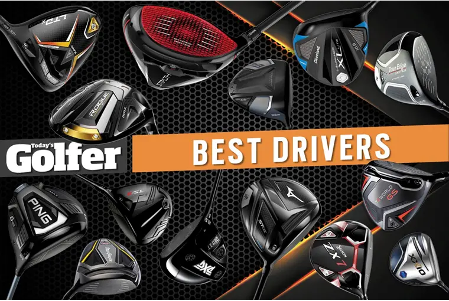

Drivers

TaylorMade engineers believe carbon composite’s lightweight benefits should not be limited to the body. Why not use the material for the face—the heaviest part of the clubhead? The SIM MAX 2 composite face is 40 percent lighter than a titanium face yet 20 percent larger than TaylorMade driver faces from just two years ago. The saved weight is redistributed in three distinct ways.
Ping’s design philosophy since its founding six decades ago has been all about managing mis-hits, and this large, perimeter-weighted driver maintains some of the highest stability on off-center hits in the industry. The G425 models use ultra-thin, web-like ribs on the underside of the crown to reduce thickness to save weight that keeps the CG low, and to launch it harder.
Fitting four player types is nice, but the really neat achievement was finding extra speed. That meant using a special high-strength titanium originally designed for the Mars Lander. The lighter and faster-flexing alloy (ATI 425) means more design freedom to create extra off-center-hit stability in the TSi2 and movable weight in the more pear-shaped TSi3.